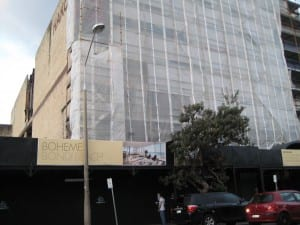

Goodbye Hakoah Club, The Boheme is movin' in 17/4/11
Many visible changes have been happening in Bondi of late, and this month sees the beginning of the end of the low-end village-like atmosphere of Hall Street and Gould Street. There’s the destruction of the Bondi Hotel bottlo and the erection of new shops and arcade in its place. And of course the rather huge development of the Hakoah Club site and its adjoining properties. These are clearly movements away from the once un-selfconscious character of old Bondi towards the now well and truly entrenched commercial, trendy, new Bondi. I wonder how many more Oportos or Nandos or McDonalds or Hungry Jacks will pop up in the months ahead? How many more parking meters and tourist dollars can we squeeze into Bondi until we can’t recognise it anymore?